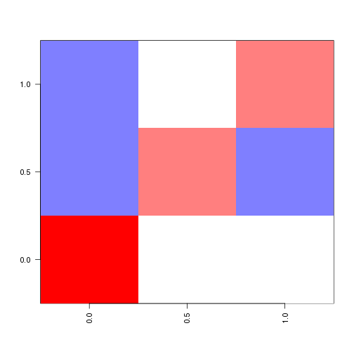

sorvi v0.4.25
Finnish open government data toolkit for R
This is an R package for Finnish open government data. New contributions are welcome!.
This work is part of the rOpenGov project.
Installation
General users (CRAN release version):
install.packages("sorvi")
library(sorvi)
Developers (Github development version):
install.packages("devtools")
library(devtools)
install_github("sorvi", "ropengov")
library(sorvi)
Further installation and development instructions can be found at the project home page.
Using the package
For further usage examples, see Louhos-blog and Datawiki.
Personal identification number (HETU)
Extracting information from a Finnish personal identification number:
library(sorvi)
hetu("111111-111C")
## $hetu
## [1] "111111-111C"
##
## $gender
## [1] "Male"
##
## $personal.number
## [1] 111
##
## $checksum
## [1] "C"
##
## $date
## [1] "1911-11-11"
##
## $day
## [1] 11
##
## $month
## [1] 11
##
## $year
## [1] 1911
##
## $century.char
## [1] "-"
##
## attr(,"class")
## [1] "hetu"
Validating Finnish personal identification number:
valid.hetu("010101-0101") # TRUE/FALSE
## [1] TRUE
Postal codes
Get Finnish postal codes vs. municipalities table from Wikipedia
postal.code.table <- GetPostalCodeInfo()
head(postal.code.table)
IP Location
Get geographic coordinates for a given IP-address from http://www.datasciencetoolkit.org//ip2coordinates/
ip_location("137.224.252.10")
## [1] "51.9667015075684" "5.66669988632202"
Municipality information
Finnish municipality information is available through Population Registry (Vaestorekisterikeskus), Statistics Finland (Tilastokeskus) and Land Survey Finland (Maanmittauslaitos). We provide separate download routine for each data set. The row names are in harmonized format and can be used to match data sets from different sources, as different data sets may carry slightly different versions of certain municipality names. Examples for each case:
Finnish municipality information from Land Survey Finland (Maanmittauslaitos, MML).
municipality.info.mml <- GetMunicipalityInfoMML()
municipality.info.mml[1:2, ]
Get information of Finnish provinces from Statistics Finland (Tilastokeskus)
municipality.info.statfi <- GetMunicipalityInfoStatFi()
municipality.info.statfi[1:2, ]
List the province for each municipality in Finland:
# Specific municipalities
m2p <- FindProvince(c("Helsinki", "Tampere", "Turku"))
head(m2p)
# All municipalities
m2p <- FindProvince(municipality.info.statfi$Kunta)
# Speeding up with predefined municipality info table:
m2p <- FindProvince(c("Helsinki", "Tampere", "Turku"), municipality.info.mml)
head(m2p)
Convert municipality codes and names:
municipality_ids <- ConvertMunicipalityCodes()
head(municipality_ids)
Translate municipality names Finnish/English:
translations <- LoadData("translations")
head(translations)
## Ã\u0085land Islands South Karelia Southern Ostrobothnia
## "Ahvenanmaa" "EtelÃĪ-Karjala" "EtelÃĪ-Pohjanmaa"
## Southern Savonia Kainuu Tavastia Proper
## "EtelÃĪ-Savo" "Kainuu" "Kanta-HÃĪme"
Retrieve population register data
Municipality-level population information from Vaestorekisterikeskus:
df <- GetPopulationRegister()
head(df)
## Koodi Kunta Kommun Male Female Total
## Äänekoski 992 Äänekoski Äänekoski 10187 10121 20308
## Ähtäri 989 Ähtäri Etseri 3231 3222 6453
## Akaa 020 Akaa Akaa 8452 8637 17089
## Alajärvi 005 Alajärvi Alajärvi 5226 5214 10440
## Alavieska 009 Alavieska Alavieska 1420 1350 2770
## Alavus 010 Alavus Alavus 4619 4634 9253
Province information
Get information of Finnish provinces from Wikipedia:
tab <- GetProvinceInfoWikipedia()
head(tab)
## Province Area Population PopulationDensity
## 1 Uusimaa 9132 1550362 170.4
## 2 Varsinais-Suomi 10664 457789 42.9
## 3 Satakunta 7956 229360 28.8
## 4 Kanta-Häme 5199 169952 32.7
## 5 Pirkanmaa 12446 472181 37.9
## 6 Päijät-Häme 5127 199235 38.9
Company subsidies from the Finnish government
Finnish broadcasting company YLE published a large data set on Finnish company subsidies ((C) MOT 10.9.2012 over 15 years. See the site for more information; CC-BY-SA 3.0-license.
tuet <- GetMOTYritystuet()
head(tuet)
Visualization routines
Line fit with confidence smoothers:
library(sorvi)
data(iris)
p <- vwReg(Sepal.Length ~ Sepal.Width, iris)
print(p)
Plot matrix:
mat <- rbind(c(1, 2, 3), c(1, 3, 1), c(4, 2, 2))
pm <- PlotMatrix(mat, "twoway", midpoint = 2)

# Plotting the scale sc <- PlotScale(pm$colors, pm$breaks)
Licensing and Citations
This work can be freely used, modified and distributed under the Two-clause FreeBSD license.
Kindly cite the work, if appropriate, as ‘Leo Lahti, Juuso Parkkinen ja Joona Lehtomaki (2011). sorvi - suomalainen avoimen datan tyokalupakki. URL: http://louhos.github.com/sorvi)’. A full list of authors and contributors and the relevant contact information is here.
Session info
This vignette was created with
sessionInfo()
## R version 3.0.3 (2014-03-06)
## Platform: x86_64-apple-darwin10.8.0 (64-bit)
##
## locale:
## [1] en_US.UTF-8/en_US.UTF-8/en_US.UTF-8/C/en_US.UTF-8/en_US.UTF-8
##
## attached base packages:
## [1] methods stats graphics grDevices utils datasets base
##
## other attached packages:
## [1] sorvi_0.4.25 helsinki_0.9.13 RCurl_1.95-4.1 bitops_1.0-6
## [5] rjson_0.2.13 mapproj_1.2-2 maps_2.3-6 ggmap_2.3
## [9] ggplot2_0.9.3.1 rgeos_0.3-4 maptools_0.8-29 fingis_0.9.9
## [13] rgdal_0.8-16 sp_1.0-14 knitr_1.5
##
## loaded via a namespace (and not attached):
## [1] boot_1.3-10 coda_0.16-1 colorspace_1.2-4
## [4] deldir_0.1-5 dichromat_2.0-0 digest_0.6.4
## [7] evaluate_0.5.1 foreign_0.8-60 formatR_0.10
## [10] grid_3.0.3 gtable_0.1.2 labeling_0.2
## [13] lattice_0.20-27 LearnBayes_2.12 MASS_7.3-30
## [16] Matrix_1.1-2-2 munsell_0.4.2 nlme_3.1-115
## [19] plyr_1.8.1 png_0.1-7 proto_0.3-10
## [22] pxR_0.29 RColorBrewer_1.0-5 Rcpp_0.11.1
## [25] reshape_0.8.4 reshape2_1.2.2 RgoogleMaps_1.2.0.5
## [28] RJSONIO_1.0-3 scales_0.2.3 spdep_0.5-71
## [31] splines_3.0.3 stringr_0.6.2 tools_3.0.3
## [34] XML_3.95-0.2